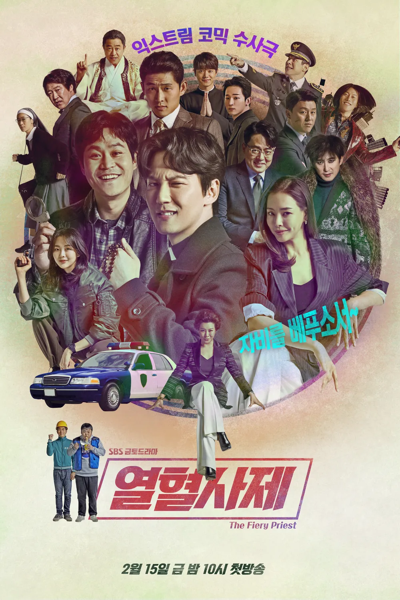
열혈사제
다혈질 가톨릭 사제와 바보 형사가 살인 사건으로 만나 공조 수사를 시작하는 익스트림 코믹 수사극입니다.
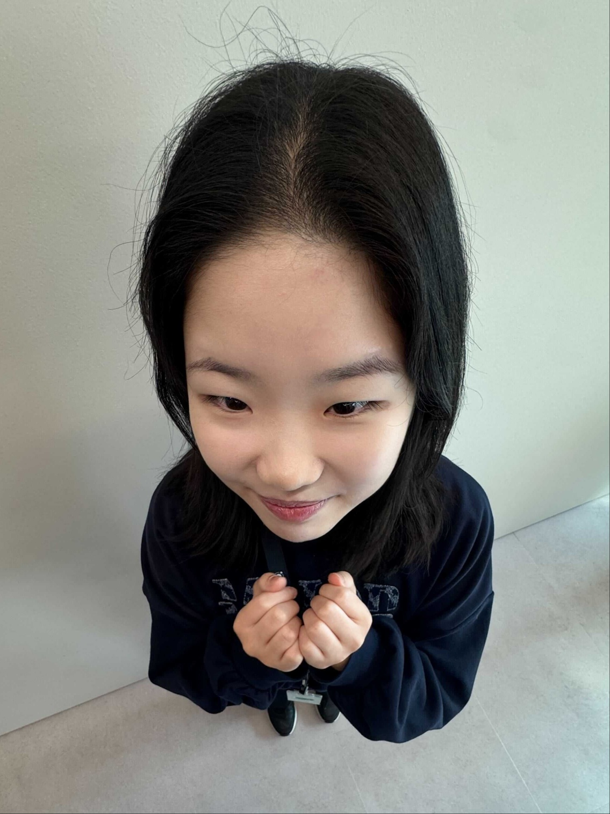
조용하지만 강한(?) 사람입니다.
평소엔 조용하고 차분한 편이지만, 관심이 생긴 일에는 꽤 깊게 빠지는 스타일이에요. 혼자 시간을 보내는 것도 좋아하지만, 크루들과 이야기 나누는 것도 즐기고 있답니다. 소소한 것에서 재미를 찾는 편이라, 일상 속 작은 변화나 새로운 경험에도 쉽게 즐거움을 느끼고요. 조금씩이라도 꾸준히 나아가려고 합니다!
| 이름 | 조은경 |
|---|---|
| MBTI | ISFP |
| 취미 | 유튜브 보기, 인스타 보기, 피아노, 종이접기, 그림 그리기, 큐브 맞추기, 우쿨렐레, 바이올린 |
| 좋아하는 음식 | 딸기, 복숭아, 귤 |
엘리의 취미생활
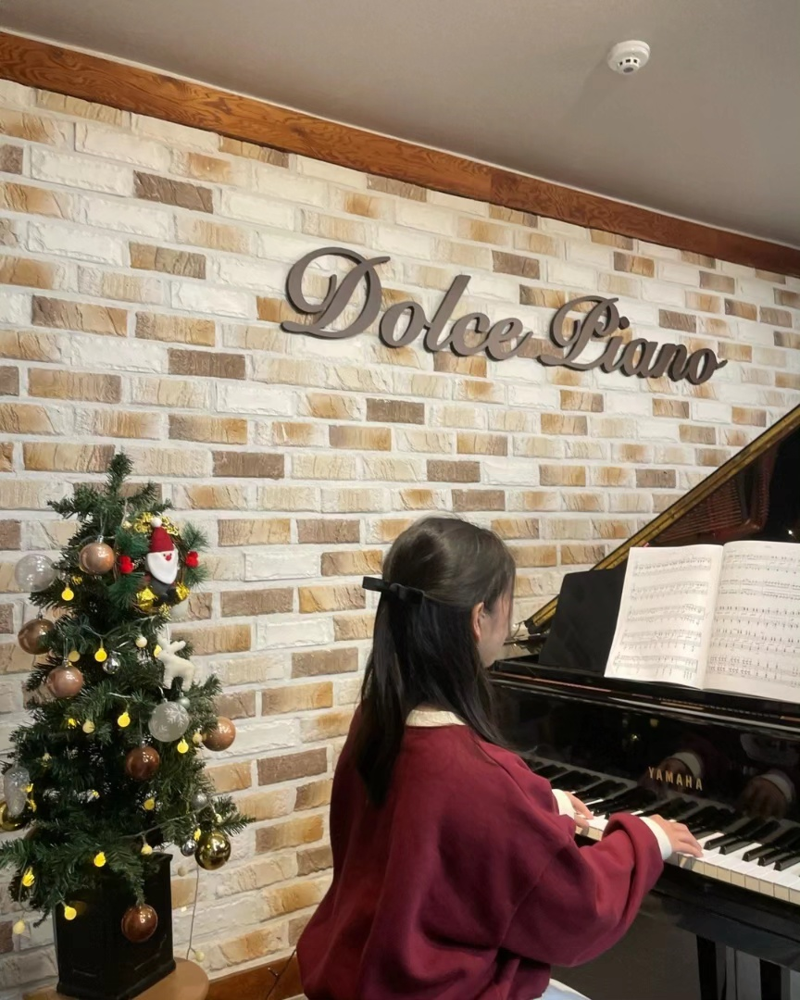
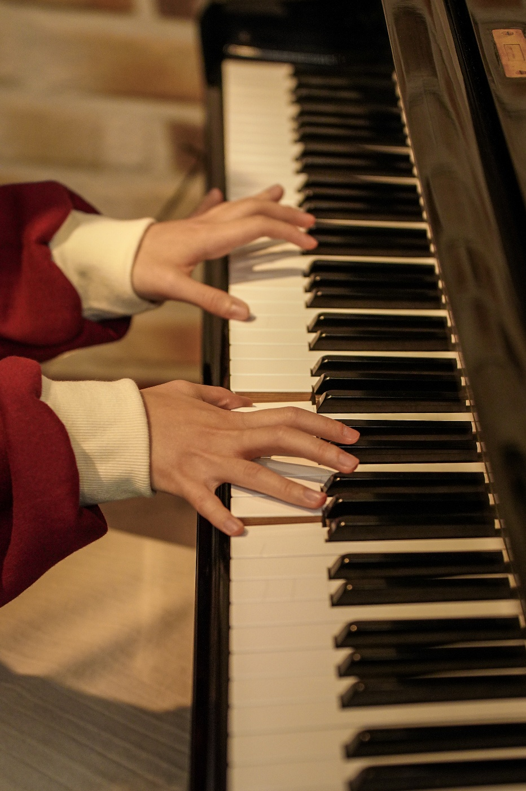
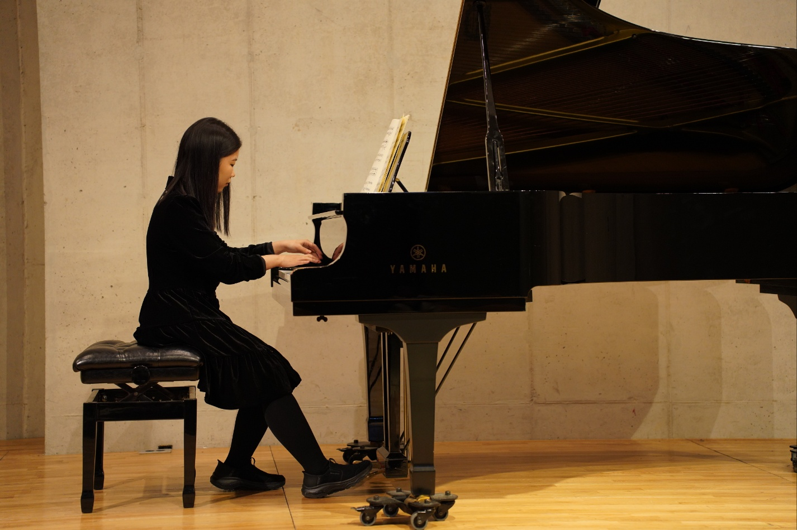
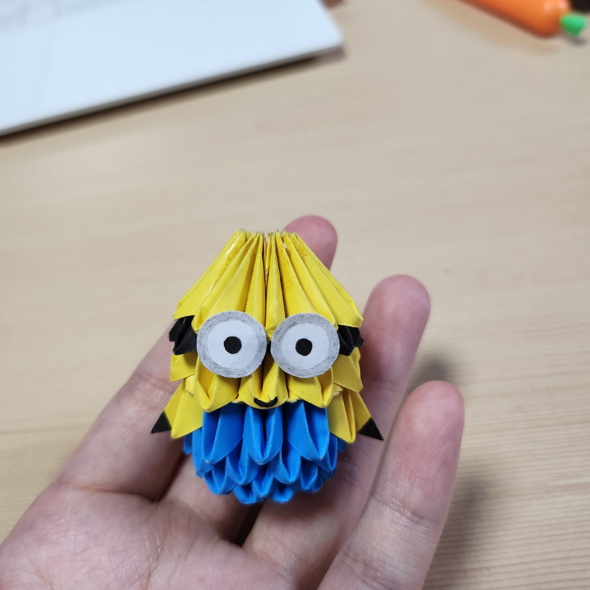
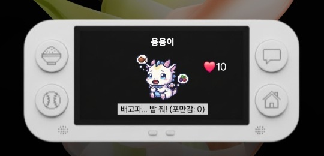
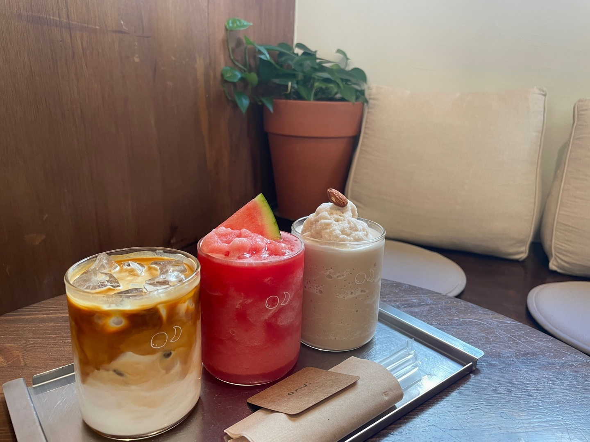
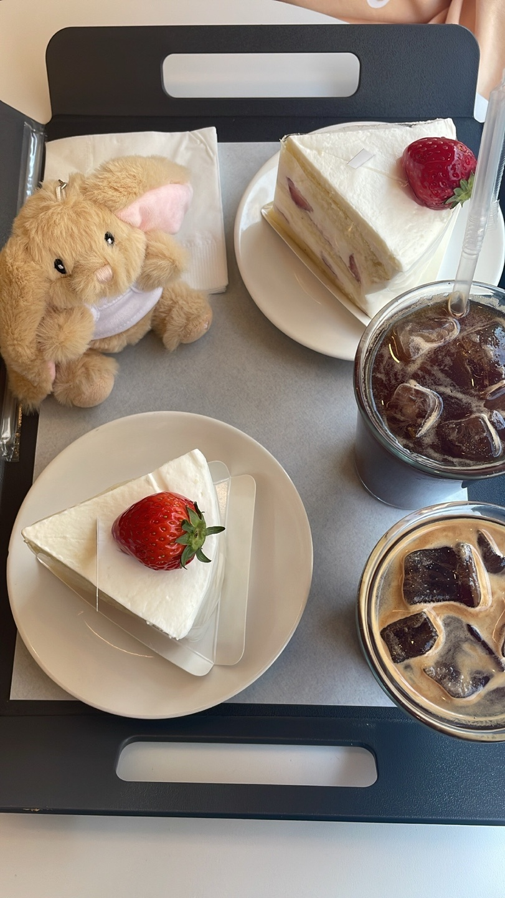
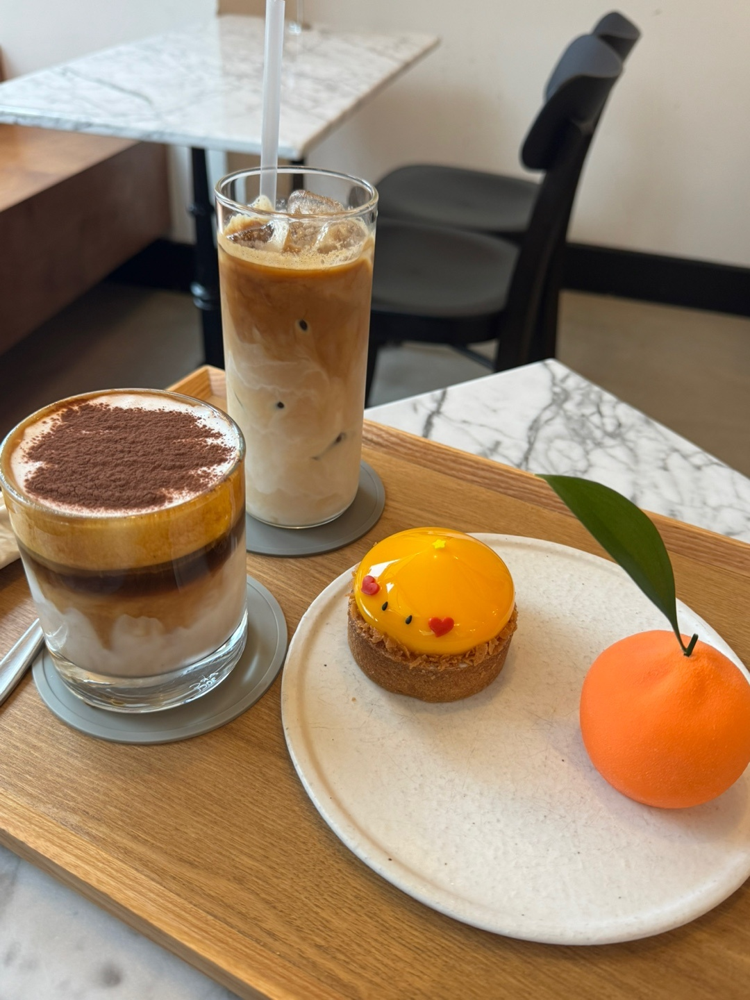
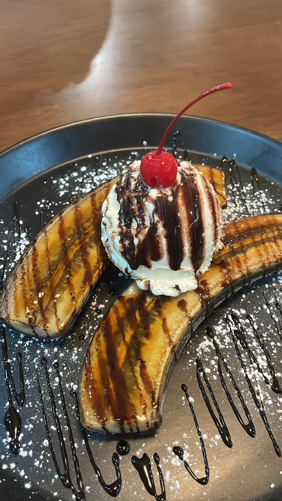

다혈질 가톨릭 사제와 바보 형사가 살인 사건으로 만나 공조 수사를 시작하는 익스트림 코믹 수사극입니다.

열세 살이 된 라일리의 감정 컨트롤 본부에 어느 날 갑자기 '공사 중' 경보가 울립니다. 기존의 다섯 감정(기쁨, 슬픔, 버럭, 까칠, 소심) 앞에 나타난 낯선 불청객들! 불안, 당황, 부럽, 따분이라는 복잡미묘한 새 감정들이 주도권을 잡으면서 라일리의 세상은 큰 혼란에 빠집니다.
오늘 새롭게 배운 것들을 기록합니다.